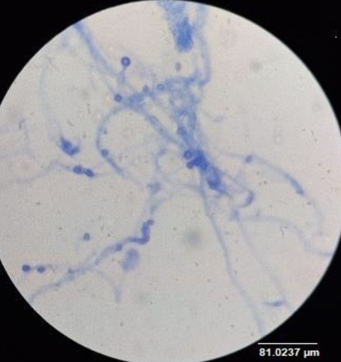
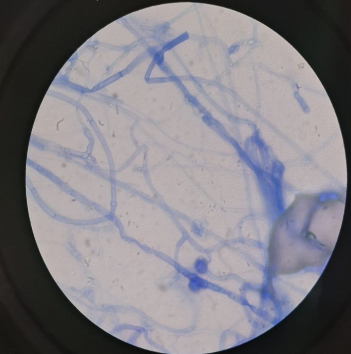

Respecto a las características microscópicas, la cepa fue aislada del cepario del Laboratorio de Microbiología del Centro Universitario UTEG, con origen desconocido. La preparación se realizó mediante técnica de impronta con cinta adhesiva (Diurex), utilizando azul de lactofenol como colorante, y se observó a aumentos de 40X y 100X.
Los conidios o esporas presentaron una longitud promedio de 3.48 ± 0.37 µm y un diámetro de 1.22 ± 0.44 µm. El ángulo de ramificación fue de aproximadamente 49.42 ± 10.73°, con una longitud de ramificación de 30.77 ± 5.1 µm.
En cuanto a los conidióforos, se observó un espesor de 0.87 ± 0.15 µm, longitud de 19.12 ± 43.74 µm y un diámetro basal de 6.55 ± 0.49 µm; no se reportó diámetro apical. No se observaron estructuras correspondientes a zigomicetos (esporangios o esporangióforos), ascomicetos (ascos o ascosporas) ni basidiomicetos (basidios o basidiosporas).
Como observaciones adicionales, las hifas presentaron forma filamentosa con aproximadamente 11 septos por campo observado. No se detectó ornamentación evidente en las estructuras ni la presencia de estructuras reproductivas accesorias como picnidios, cleistotecios o peritecios.